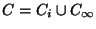

|
You are here : Control System Design - Index | Book Contents | Appendix C | Section C.8.1 C. Results From Analytic Function TheoryC.8.1 Poisson's integral for the half planeTheorem C.9 Consider a contour C bounding a
region D. C is a clockwise contour composed by the imaginary axis and a
semi circle to the right, centered at the origin and with radius
Let f(z) be a real function of z, analytic inside D and, at least, of the order of z-1, i.e. f(z) satisfies
Then
And, if (C.8.1) is replaced by the weaker condition
Then,
Proof Applying Theorem C8, we have
Now, if f(z) satisfies (C.8.1), it behaves like z-1 for large |z|, i.e. is like z-2. The integral along then vanishes and the result (C.8.2) follows. To prove (C.8.4) when f(z) satisfies (C.8.3), we first consider z1, the image of z0 through the imaginary axis, i.e z1 = -x0 + jy0. Then, is analytic inside D and on applying Theorem C.7 we have that
Combining equations (C.8.5) and (C.8.6) we obtain
Since  the integral over C can be decomposed in the integral along the imaginary axis , Ci, and the integral along the semicircle of infinite radius, . Since f(z) satisfies (1.69), this second integral vanishes, because the factor is of order z-2 at . Then
The result follows on substituting z0 and z1 by their real and imaginary part decomposition.
Remark C.1 One of the functions which satisfies (C.8.3), but does not satisfy (C.8.1), is , where g(z) is a rational function of relative degree . We notice that in this case
where K is a finite constant and is an angle in . Remark C.2 Equation (C.8.4) equates two complex quantities. Thus, it also applies independently to their real and imaginary parts. In particular
This observation is relevant to many interesting cases. For instance, when f(z) is as in remark C.1. In this particular situation
For this particular case, and assuming that g(z) is a real function of z, and that y0 = 0, we have that (C.8.10) becomes
where we have used the conjugate symmetry of g(z). |